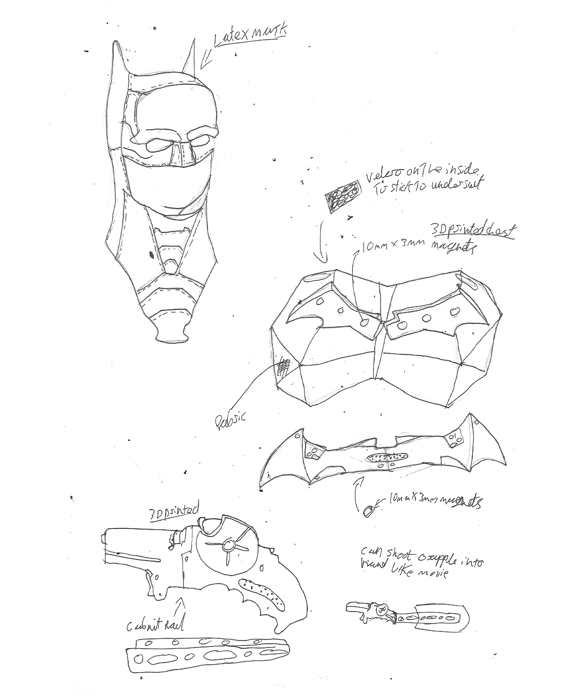
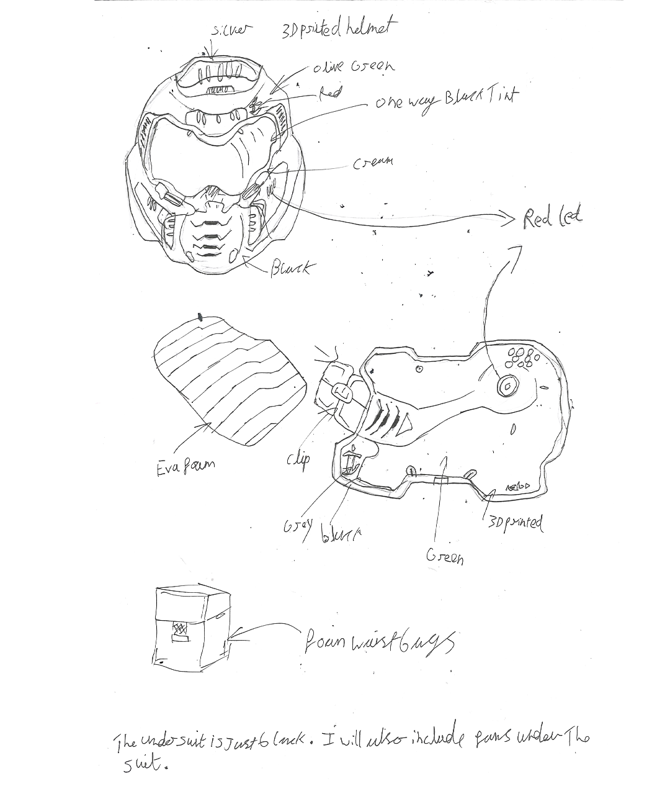
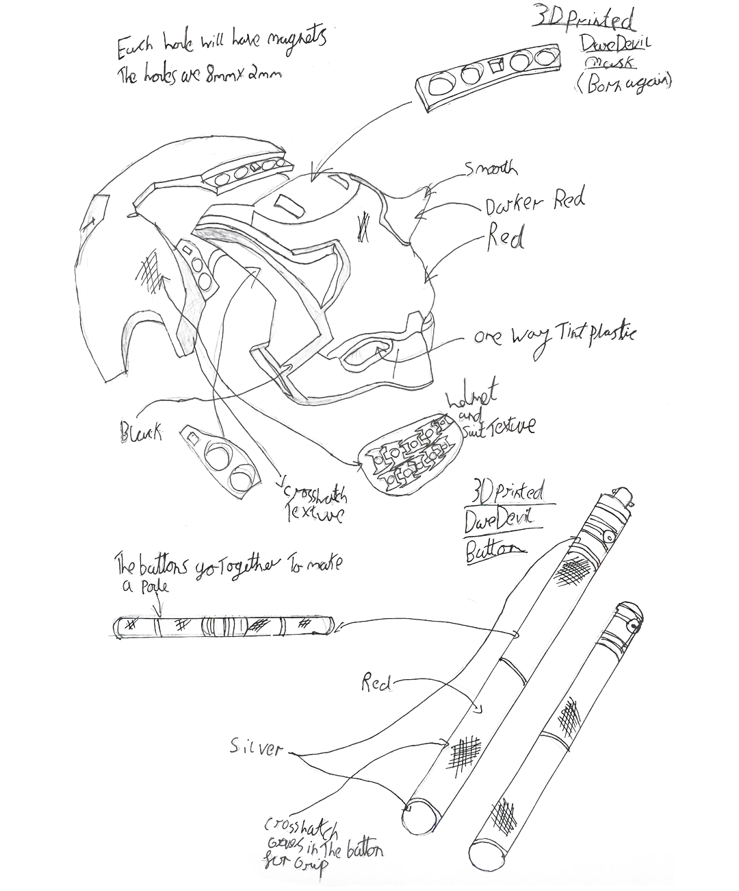
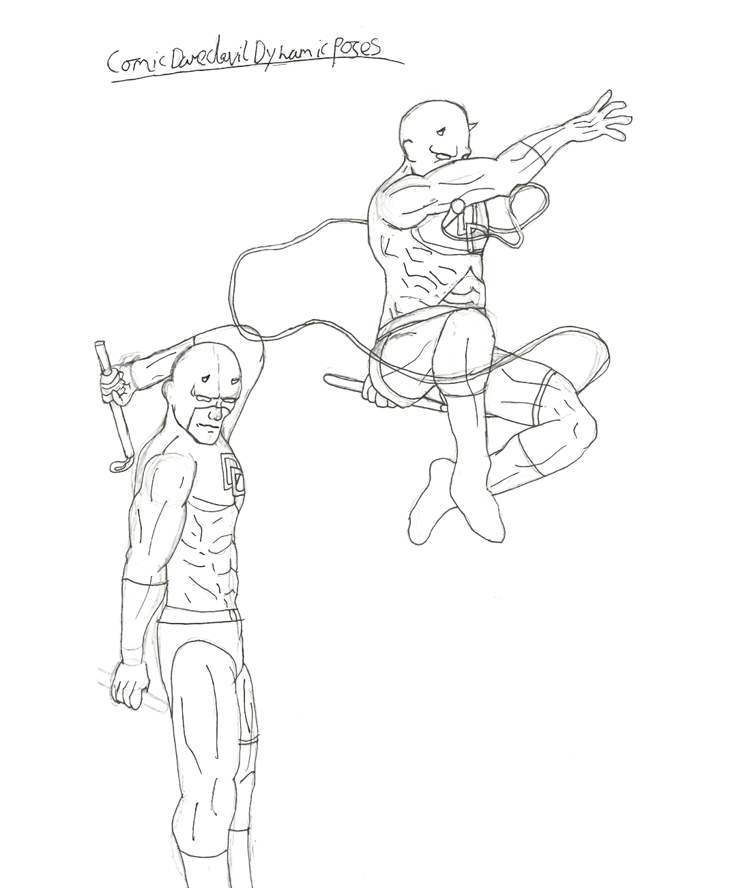

Gabriel Shearer
Projects.

I made this Moon Knight suit in late 2022 when the show first came out, as I really liked the show's design and wanted to try making my own version. This was also my first project using 3D printing.


The only parts I printed were the mask and belt buckle, but if I were to remake it now, I would also 3D print the chest and other armour pieces. At the time, I used cheap bed sheets for the fabric, whereas now I would use linen or higher-quality materials.


I have made multiple masks, helmets and one off pieces, my favourite of these that I've produced is my Boba Fett helmet. I painted it silver first and used masking liquid to block out areas before adding layers of dark green and light green to create a chipped, screen-accurate look. I used the same layering technique for the red details, using different shades to add depth and wear. These techniques I used frequently throughout other projects for consistent results.

This was my first full cosplay suit and was made without any 3D printing, using only foam and faux leather. While I know I could do a much better job now, at the time I was really proud of the design and craftsmanship, and it was an important learning experience for me.


For the Vegeta chest plate, I used very dense foam, which limited how much I could shape and bend it. However, I was happy with the paintwork, especially the shading, which I used to make the armour look more accurate to the anime style.




Technical drawings and sketches I made, leading to the inspiration for some of my projects.


This chest plate was based on the original Doom Guy design and was made entirely from foam. It helped me improve my armour shaping and detailing skills.